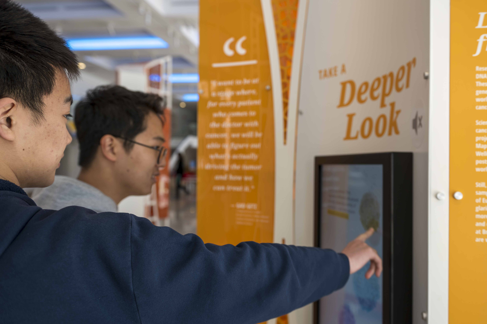
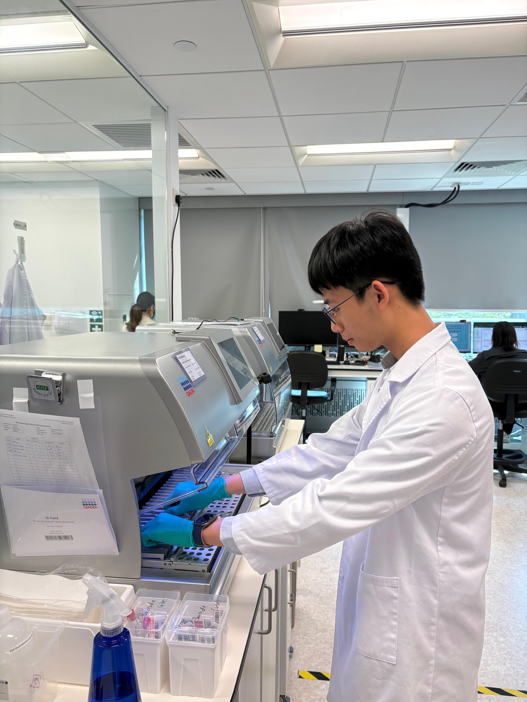
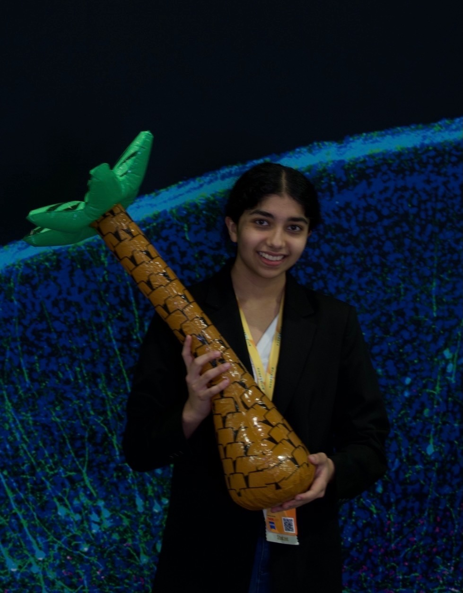

Meet Our Team
EBS is built and run entirely by students in the Genetics and Biotech Club at Phillips Exeter Academy. We are grateful for the support of our faculty advisors and the broader Exeter community.
Executive Committee

Jaiden Kim
Co-Head
Class of 2028
View profile
- USABO 2026 Semifinalist
- Summer 2026 Research Intern, Rice University Department of Biosciences
Elucidating Serotonin-Independent Pathways Underlying Sertraline-Mediated Lipid Loss and Protestasis

Adrian Chan
Co-Head
Class of 2028
View profile
- Team UK IBO Selection Candidate, 2024
- Medical & Scientific Intern, Hong Kong Genome Institute
Contributed to whole-genome sequencing workflows with HKGI and Hong Kong Children’s Hospital, plus genomic literacy and policy work. - SSTP 2026 Research Intern, University of Iowa Department of Pathology — Yang Lab
Analyzed SETDB1 using ORIEN and TCGA datasets; assessed dFF-ChIP and total RNA-sequencing results; developed a CRISPR/Cas9-degron system in UCEC cell lines.

Reya Satam
Co-Head
Class of 2028
View profile
- Presenter, Max Planck Florida Institute for Neuroscience Sunposium
Presented research on genetic architecture of multiple sclerosis. - Research Intern, UMass Chan Medical School
Investigates how localized traumatic brain injury changes circadian rhythms in Drosophila. - Neurogenetics researcher
Completed a meta-analysis on genetic regulatory architecture of multiple sclerosis with University of Notre Dame faculty.
Luke Wang
Co-Head
Class of 2027
View profile
- USABO 2025 & 2026 Semifinalist
- SSP Biochemistry, 2026 — Research Project
Characterization of Setosphaeria turcica Cdc14 Phosphatase Activity and Development of Potential Inhibitors for Northern Corn Leaf Blight

Organizing Committee and School Partners
Media Director
Design & Social Media
Class of 2028
Abstract Reviewer
Submissions & Review
Class of 2028
School Partner
Phillips Academy
Class of 2027
Note: Team member names and headshots will be added when the organizing committee is finalized in Fall 2026. If you are interested in joining the organizing team, see below.
Faculty Advisors
EBS is supported by dedicated faculty at Phillips Exeter Academy who believe in student-led scientific inquiry and provide guidance, oversight, and institutional support.
Dr. Summer Morrill
Biology Department
Phillips Exeter Academy
Faculty Co-Advisor
Science Department
Phillips Exeter Academy
Join the Organizing Team
The Genetics and Biotech Club is actively recruiting students to help organize EBS 2027. No prior event experience needed — just enthusiasm for biology, science communication, and making research accessible to your peers.
We have roles in research curriculum development, outreach, design, logistics, and more. If you care about this mission, we want to hear from you.
Express Interest in Joining